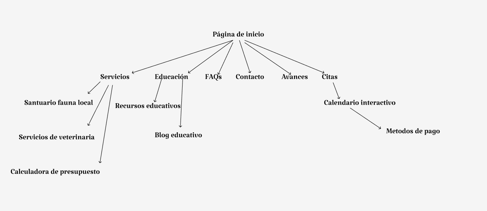

Avances
Introducción
TigreVet es una clínica veterinaria abierta las 24 horas, ubicada en las Islas del Tigre, Buenos Aires, especializada en el cuidado integral de mascotas y la conservación de la fauna local. Nuestro sitio web tiene como objetivo brindar una plataforma accesible donde los dueños de mascotas puedan conocer nuestros servicios, reservar turnos en línea y acceder a recursos educativos sobre el bienestar animal. Además, promovemos la preservación de especies locales a través de nuestras actividades de conservación. Para atraer tráfico, implementaremos un blog con contenido educativo optimizado para SEO, ofreciendo consejos útiles sobre la salud de las mascotas y la fauna de la región.
Detalles
Cada uno de estos elementos refuerza la identidad de la clínica veterinaria al proyectar una imagen de confianza, profesionalismo y cuidado responsable. Al combinar colores simbólicos con tipografías claras, íconos adecuados y un estilo gráfico minimalista, la clínica se presenta como un lugar moderno, amigable y seguro para los animales, lo que seguramente resonará positivamente con su audiencia objetivo.
Publico objetivo
- Edad: Principalmente adultos entre 25 y 50 años.
- Genero: Dueños de mascotas, tanto hombres como mujeres.
- Aficiones: Cuidado de mascotas, conservación de fauna local.
- Nivel económico: Medio-alto, ya que los servicios veterinarios suelen tener un costo moderado.
- Intereses: Salud de mascotas, bienestar animal, conservación del medio ambiente.
El sitio web debe adaptarse a este público mediante un diseño amigable, fácil de navegar, con secciones interactivas como citas en línea y una calculadora de presupuesto, permitiendo a los usuarios interactuar con los servicios de la clínica de manera eficiente.
Paleta de colores
Logo
 1.png)
Favicon
Tipografia
Usamos la tipografía "Katibeh" porque nos parecio que tiene estilo
y a la vez es lo
suficientemente simple para nuestro propósito.
Estilo gráfico
Minimalista y moderno, con imágenes de alta calidad sobre mascotas
y veterinarios
sacadas de
páginas de stock gratis o generadas por IA.
Mapa del sitio
Lautaro Cavallo
Comunicador web
Ramiro Bergoglio
Diseñador UX/UI
Julian Santamaria
.jpg)